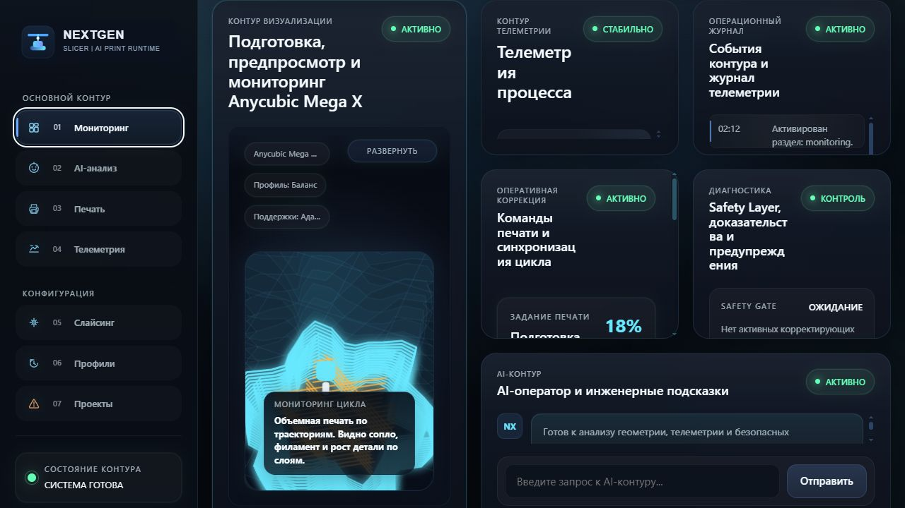

Дефект становится виден поздно
Underextrusion, warping, spaghetti и layer shift часто заметны уже после потери материала и времени.
NextGen Slicer связывает подготовку, постслойный риск-анализ, телеметрию и Safety Gate в один контур: система видит ранний риск, сверяет его с G-code и пропускает только безопасную ограниченную коррекцию.

Слайсер рассчитывает стартовые параметры, но реальная печать живёт по своей динамике: адгезия, вибрации, подача филамента и температура меняются уже после генерации G-code.
Underextrusion, warping, spaghetti и layer shift часто заметны уже после потери материала и времени.
Траектория известна заранее, но контур не сопоставляет её с телеметрией и визуальным состоянием слоя.
Мониторинг, диагностика и коррекция обычно живут отдельно и не замыкаются в контролируемый runtime.
Коммерческая логика проекта строится вокруг B2B-пилотов, лицензии/подписки, образовательного комплекта и open-core мониторингового стека.
не обещаем серийный продукт заранее: сначала валидируем дефекты, задержки и полезность для оператора.
Главная ценность не в том, что система красиво показывает принтер. Ценность в маршруте: Подготовка формирует безопасный старт, предпросмотр показывает риск, мониторинг удерживает процесс в коридоре действий.
Функции из demo runtime встроены в историю так, чтобы человек понимал, что можно открыть уже сейчас, а что идёт в следующую инженерную валидацию.
Выбор модели, intent-профиля и Cura-параметров: высота слоя, заполнение, температура сопла, поддержки и AI-оптимизация.
Система заранее показывает стек слоёв, проход траектории, ETA, расход материала и зоны, где мониторинг должен быть особенно внимателен.
Телеметрия, дефекты, AI-рекомендация, журнал предупреждений, terminal feed и mock G-code stream сходятся в операторском экране.
Нейросеть не получает права писать произвольный G-code. Она формирует ограниченное предложение, а Safety Gate проверяет диапазоны, буфер, контекст и журналирование перед действием.
G-code, vision и телеметрия сверяются в одном временном контексте.
Каждое действие проходит policy-check, ограничения и audit trail.
Anycubic Mega X используется как опорная машина, но контур не строится как vendor lock.
Базовая логика может работать локально, а AI-слой усиливает риск-анализ там, где он нужен.
Окна действий: скорость −18…+8%, температура −8…+6°C, подача −10…+8% перед проверкой Safety Gate.
Камера видит результат, энкодер сравнивает команду E с фактом, IMU и ток ловят механику, звук помогает распознать экструдер, а профиль слоя даёт метрику геометрии.
spaghetti, наплывы, underextrusion, отрыв, layer shift и stringing.
провалы, локальные превышения, warping и отклонение слоя от номинала.
ранний сигнал недоэкструзии, проскальзывания, засора или обрыва подачи.
вибрации, щелчки экструдера, рост тока, риск layer shift и перегрузки осей.
Архитектура читается как pipeline, а не как список технологий: от модели и профиля до безопасного потока команд и evidence-логики.
подготовка, предпросмотр, мониторинг
профили, slicing, базовый G-code
геометрия, vision, телеметрия, логика дефектов
policy-check, диапазоны, валидация, audit log
Marlin buffer, bounded streaming, логи
HDF5, audit trail, отчёты, датасет
6 типов дефектов, 7 виртуальных датчиков, RGB + Depth + Segmentation.
Единый формат для кадров, сенсоров, команд и evidence-логики.
Архитектурная гипотеза для временных рядов и ранних аномалий.
Один формат данных для псевдоданных, Unity-потока и будущего физического стенда.
Уже можно показать продуктовый сценарий подготовка → предпросмотр → мониторинг, операторский экран, Safety Gate и реакцию на дефект. Следующий шаг — связать это с физическим FDM-контуром, реальной телеметрией и датасетом.
Подготовка, предпросмотр, мониторинг, AI-подсказка, Safety Layer, alerts, terminal feed и mock G-code stream.
Описаны режимы simulation / Unity stream / real hardware, TelemetryFrame, синхронизация и HDF5-логирование.
В текущем виде нет реального slicing, ML-инференса, WebSocket-потока от Unity и физического G-code patching.
FDM-принтер, телеметрия, задержки USB-streaming, safety-проверки и пилотная валидация.
Демо показывает иллюзию будущего контура в браузере: оно не подключено к принтеру, но уже объясняет поведение продукта, реакцию Safety Gate и recovery-цикл.
загрузить объект и увидеть быстрый отклик подготовки
перейти к пресету, где риск становится заметнее
поднять скорость выше 170 мм/с и перейти в мониторинг
увидеть AI-рекомендацию, Safety Gate и возврат к stable
дожать demo, связать сайт и agents, собрать сценарий дефекта
интеграция Cura, анализ G-code, базовая телеметрия
USB-streaming, валидация задержек, FDM-тесты
лабораторный пилот, датасет, проверяемый MVP
проектная гипотеза снижения брака
цель снижения постоянного ручного присутствия
целевое окно реакции на аномалию
требуемая синхронизация каналов
Мы не заявляем, что продукт уже превосходит готовые промышленные системы. Корректная позиция сейчас: NextGen Slicer собирает Cura-логику, runtime-мониторинг, Safety Gate и evidence-слой в один проверяемый маршрут.
они закрывают стандартизацию, мониторинг, производство или облачное управление, но не всегда дают безопасный контур действия на уровне потока команд.
предварительно выделенные зоны для оформления IP, без заявления о готовой патентной защите.
первый рынок — лаборатории, FabLab, сервисы 3D-печати и команды, которым важна проверяемая стабильность FDM-цикла.
Карточки больше не выглядят как вставленные слайды: каждый участник показан через роль, вклад и часть системы, за которую он отвечает.
Координация проекта, сборка продуктового контура, связь Unity, Safety Layer и демонстрационного сценария.
Виртуальный стенд Anycubic Mega X, визуализация процесса, симуляция дефектов и подготовка synthetic data.
Мультимодальные признаки, vision, Mamba/SSM-направление, inference-логика и риск-анализ.
Датчики, синхронизация каналов, TelemetryFrame, режимы simulation / Unity stream / real hardware.
Рынок, патентная стратегия, экономика пилота, ROI-логика и упаковка проекта для внешних партнёров.
Ближайший рубеж — связать UX-контур, симуляцию и реальный FDM-стенд в один проверяемый pipeline без потери безопасности.
проверка реального контура и механики печати
буфер, задержки, bounded correction и безопасная подача команд
реальные сценарии дефектов, разметка и валидация
лабораторная площадка, обратная связь и MVP-цикл